Git is used to team up with other coders on a code project. There are many other software like Git such as Subversion, Mercurial, Bazaar and many many others. Some are made by companies to manage in-house teamwork. Others are open-source and allow for customization. Out of all the software that exists for teaming up with other coders, Git is the most widely used. By learning Git you open yourself up to an entire world of team projects that you could quickly write code into.
Why use Git?
Software like Git is an essential skill as a developer.
You use these at work. It is the primary tool you use when working with software in the engineering space. You use it for all personal projects and teaming with others. It is one of those skills, that once you learn, you know it forever and use it every day. You may even wonder how non-coders could have ever lived without knowing software like these. Software like Git is the cornerstone of teaming up with other coders. So if people don't know it, they generally have no clue how code is built.
These software companies like Microsoft, Alphabet & Meta are simply extraordinarily abstract, ambiguous, without understanding how teamwork happens. They may even come to believe you have to be some type of savant to code in teams. Learning Git-like software takes a great deal of mysticism out of coding and you should learn it. Code itself will be a much more tangible craft.
What is Git?
Git is a software on your computer. All these types of software are just programs on your computer. The idea that the software is on your computer is known as local software. This means Git is a local software. It takes specific versions of your code and stores them over time locally.
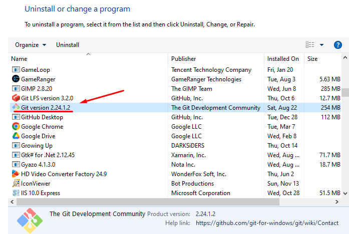So every version of your file is saved on your computer. A history of your code is saved. Every version of your code saved can potentially double the size of your local Git history folder.
After reading this article, if you don't have Git on your computer already, you can download git here.
It is a local software that is global to your computer. What I mean is Git should run on command with the git command. After installing it you should be able to use Git commands anywhere on your PC. This is because it is added as a global path. In reality, this is what you are calling:
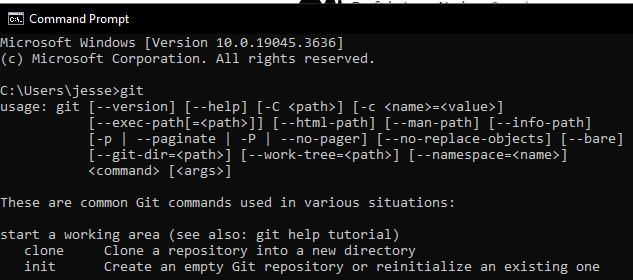The "C:\Program Files\Git\bin" is added in the background by windows as a variable when installing the app. This applies to every operating system, Linux, Mac & Windows. When you install Git, it should automatically add "C:\Program Files\Git\bin" to your global folders.
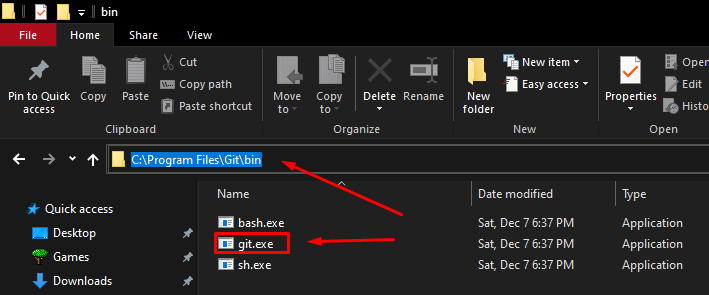This means every application which uses Git is simply calling "git" as if it were a command. If you do not make that folder global, many applications which wrap around Git won't work. So make sure the folder is added as a global folder AKA a PATH. Like this...
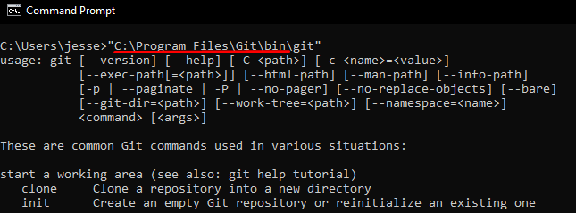All of those folders contain applications which are now global and can be called with just one command, applicable to all operating systems. Like this...
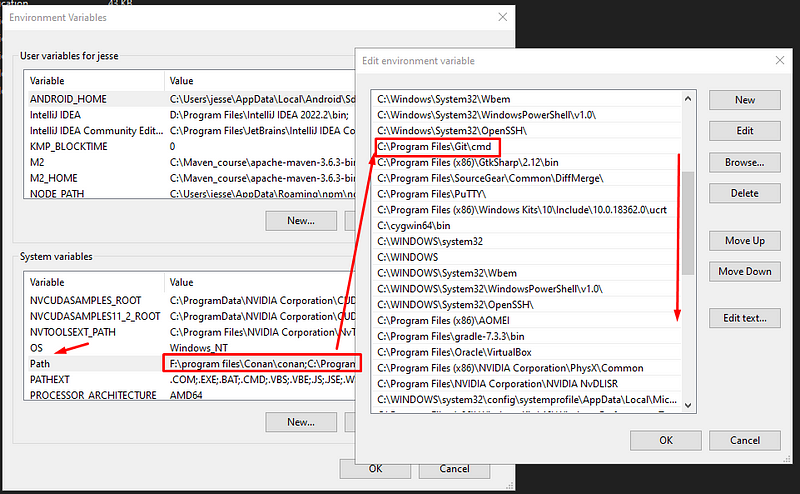"gradle" is callable everywhere, instead of using "C:\Program Files\gradle-7.3.3\bin". So yes, you will know if you installed Git correctly by just calling "git" in your command line. From there every version and complete history is saved on a .git folder in your project...
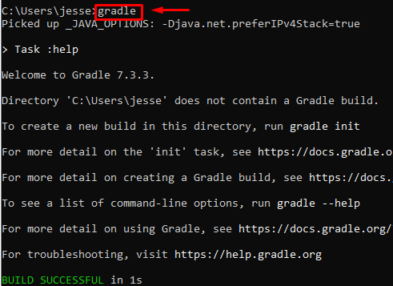If you delete this folder all your git history and every version of your code will be deleted. Because git is global to your local computer, it doesnt matter where you call the git command. It will search for a ".git" folder from your current location and up the folder hierarchy. This means if you enter the src folder in the above it will seek the .git file above it. Take a look...
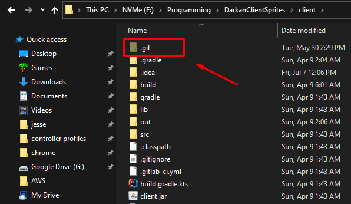Git goes up and up the folders searching for a ".git" folder. It does not go down and into folders, only up to the parents. If it does not find a ".git" folder than that means that code source is not in a git project. Delete the ".git" folder and you remove all the team related stuff from your code project and the code source ceases to be a git project.
Remote git
What is cool is that you can connect one person's Git to another person's Git. Basically you can host your project on a public URL. Here is an example from my current LLM...
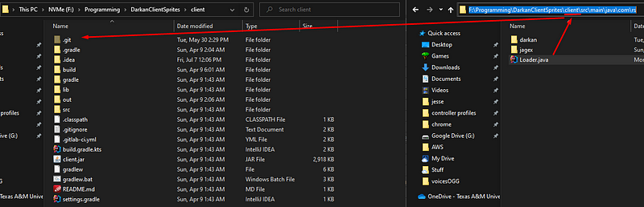You can set your current git project as a public project accessible from a URL. It is still Git, but you are putting it public so any team member can download your code and contribute. Back in the old days this was how it was done. You created a bunch of public git project end points and you kept a list of them and worked off of one main source, called the origin. You would essentially have a team leader who is the holder of the main source or time line. Over the years we have evolved and even wrapped Git around websites for this purpose.
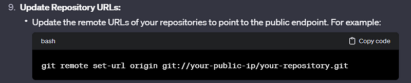This is the invention of GitHub-like websites like GitLab or Googles private software websites which you get access to once you are an employee. They are a local git software wrapped with a website UI.
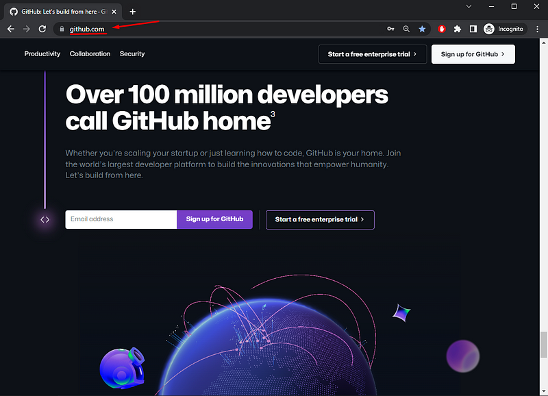That is all GitHub/GitLab is. It is just Git. So learn Git first then GitHub will make sense. This here...

Is just your code source master AKA origin version on a public Git url. You can get your public Git url here...
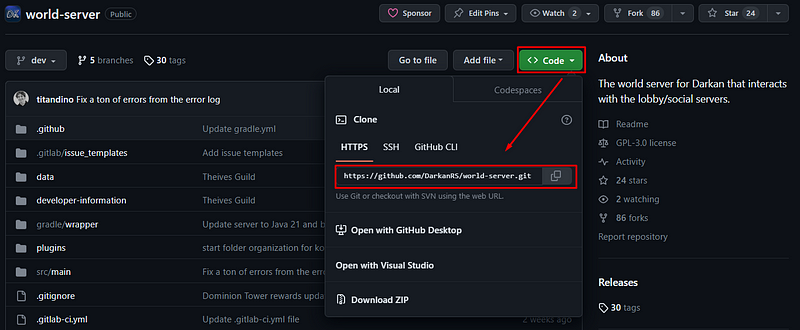That endpoint is just Git in the end publically hosted. If you were to look at the actual web files of GitHub in the background you would see a ".git" folder and your project. They have a huge file structure with a bunch of ".git" files and projects everywhere for every project on the website. It is pretty cool.
How do multiple coders work together?
So in Git each coder is known as an author. Every version of your code source is known as a commit. The more versions AKA commits of your code that exist, the bigger your ".git" folder gets and the bigger the ".git" folder gets on GitHubs background folders.
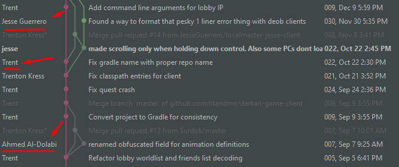For example Google Chrome has so many versions/commits that its history folder, like the .git folder, is 100GB+. This is because the code has been versioned over 1 million times by many different authors. There are 1 million+ versions of the commit history. If we look at a commit history visually, it will look like this...
Here we have 3 authors; Jesse, Trent & Ahmed. Notice the time line, there are three colors, pink for Trent, green for Jesse and grey for Ahmed. These are like alternate timelines. Think of them like alternate universes of your code. In these alternate universes there are variant code files that look different. I was just watching a show which I won't mention the name but yea. Every individual line is an alternate version of the code, an alternate universe where Ahmed changed the code and Trent did not.
We work in parallel with our local project being different than everyone else. Notice every new author gets an offshoot away from the pink line. Then our team leader, the team lead, Trent, handles the ultimate version of our code, the pink one. He merges all of our code into a central timeline which then we all re-download. This is how team working a code source works. You have a team lead and a bunch of coders working in parallel.
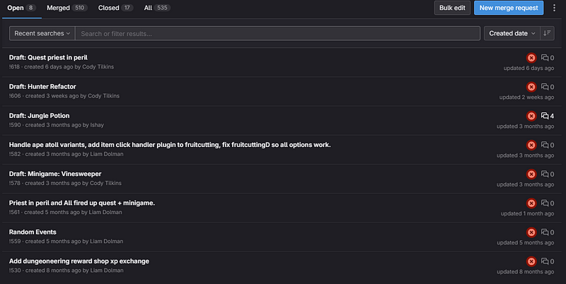That code source has about 8 authors and Trent and I are the only ones who have permission to "merge" parallel timelines. We can manage the sacred, I am kidding, the main timeline. We setup standards for the other coders and look at their changes. Here are the current offshoots to the pink timeline above:
Each one of these versions and authors are waiting to be inserted into the main timeline by our team leads, Trent and I. We look inside to see the code changes...
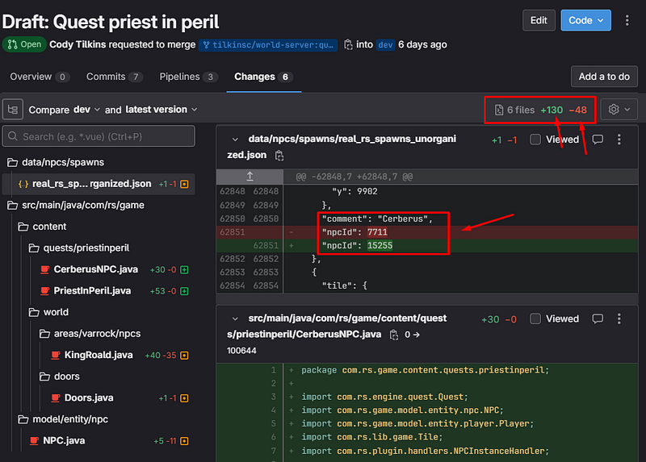Here we can see Cody made a bunch of changes to the code and is implementing a quest in our MMORPG called "Priest in Peril". We review every file, there are 6 file changes +130 lines added and -48 lines deleted. The green is code added and the red is code deleted.
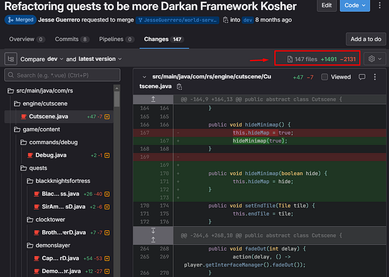When we accept Cody's quest to our main timeline and Git automatically adds all individual changes. If two authors had conflicting file changes or two variants of the same file, the team leads deal with that and chooses what lines they want to keep and discard.
You will also note sometimes an author makes a huge update with 100+ versions to merge into the main branch. Here is a medium sized one. In cases like that that individual author merges the main timeline into their code then sends a merge request to the team lead. Then the team lead does a major review which can take hours going through ever file and line, testing and debugging the code. It is only polite for the individual author to highly audit his own code before the team lead does. This way the team lead doesn't spend a bunch of time reviewing the code.
I have seen Trent work on an authors huge update for a whole day. It could have been more than a quarter less time had the individual author merged the whole timeline into their repo and reviewed it himself. But, hey, it was a really great update and we want that version in our project. We prefer that coder continue making huge updates and tell him to clean up his future updates later. Over time his versions will be higher quality, it is kind of expected that newer coders will have a hard time. It is super fun to see new coders put in huge updates though.
Anywho, I hope you learned something. Happy coding!
Resources
Download Git: https://git-scm.com/downloads
What is version control: How Version Control Is the Best Way to Save Your Code